전산응용토목제도기능사 (2008-07-13 기출문제)
1과목: 토목제도(CAD)
1. 다발 철근을 사용할 때 따라야 할 규정으로 틀린 것은?
- 이형철근이어야 한다.
- 다발로 사용하는 철근 개수는 4개 이하이어야 한다.
- 스터럽이나 띠철근으로 둘러싸여져야 한다.
- 보에서 D19를 초과하는 철근은 다발로 사용할 수 없다.
(정답률: 73%)

2. 철근의 이음에 대한 설명으로 옳은 것은?
- 최대 인장 응력이 작용하는 곳에 철근의 이음을 하여야 한다.
- 이음이 한 단면에 집중하도록 하는 것이 유리하다.
- 철근의 이음 방법에는 겹침이음, 용접이음 및 기계적 이음이 있다.
- 인장 이형철근의 겹침이음길이는 A급, B급, C급, D급으로 분류하며 A급의 경우 겹침이음길이가 가장 길다.
(정답률: 77%)
3. 구조물 시공 시에 철근을 묶어 다발로 쓸 때 다발철근의 피복두께는 다음 중 어느 것 이상으로 하여야 하는가?
- 다발의 등가지름
- 굵은 골재의 최대치수
- 단면의 최대치수
- 단면의 최소치수
(정답률: 39%)
4. 철근 콘크리트 보를 강도 설계법으로 설계할 경우 필요한 가정으로 잘못된 것은?
- 보가 파괴를 일으킬 때 압축측 콘크리트 표면에서의 최대 변형률은 0.003 이다.
- 철근과 콘크리트 사이의 부착은 완전하며 그 경계면에서 상대활동은 일어나지 않는다.
- 보의 극한상태에서 휨 모멘트를 계산할 때 콘크리트의 인장강도를 고려한다.
- 보에서 임의의 단면이 휨을 받기 전에 평면이었다면 휨 변형을 일으킨 뒤에도 평면을 유지한다.
(정답률: 45%)
5. 철근비가 균형 철근비보다 클 때, 보의 파괴가 압축측 콘크리트의 파쇄로 시작되는 파괴 형태를 무엇이라 하는가?
- 취성 파괴
- 연성 파괴
- 경성 파괴
- 강성 파괴
(정답률: 52%)
6. 철근 크기 D10~D25 에서 180° 표준갈고리와 90° 표준갈고리의 구부림 최소 내면 반지름은 철근지름(db)의 몇 배인가?
- 2배
- 3배
- 4배
- 5배
(정답률: 53%)
7. 단철근 직사각형보에서 단면의 폭이 30㎝, 높이가 60㎝, 유효기피이가 50㎝, 인장 철근량이 15cm2 일 때 인장철근의 철근비는?
- 0.01
- 0.008
- 0.0⑤
- 0.001
(정답률: 27%)
8. 철근을 소요 두께의 콘크리트로 덮는 이유에 대한 설명으로 옳지 않은 것은?
- 시공상의 편의를 위해서
- 철근의 부식방지를 위해서
- 화해(火害)를 받지 않도록 하기 위해서
- 부착응력 확보를 위해서
(정답률: 67%)
9. 철근 콘크리트에서 철근의 피복두께에 대한 설명으로 적당한 것은?
- 콘크리트 표면과 그에 가장 가까이 배치된 철근 표면사이의 최단거리이다.
- 콘크리트 표면과 그에 가장 가까이 배치된 철근 중심사이의 거리이다.
- 콘크리트 표면과 그에 가장 가까이 배치된 철근 사이의 최장거리이다.
- 콘크리트 표면과 그에 가장 가까이 배치된 철근 사이의 간격 1/2에 해당하는 거리이다.
(정답률: 58%)
10. 단철근 직사각형보에서 발생하는 휨 응력 및 변형률에 대한 설명으로 잘못된 것은?
- 휨 응력은 중립축에서 0이다.
- 휨 응력은 중립축으로부터 거리에 비례한다.
- 변형률은 중립축으로부터 거리에 반비례한다.
- 압축응력은 압축축 콘크리트가 부담한다.
(정답률: 54%)
11. 철근 콘크리트 부재에 이형 철근으로 2종인 SD 30을 사용 한다고 하면, SD 30에서 30의 의미는?
- 철근의 단면적
- 철근의 공칭지름
- 철근의 연신율
- 철근의 항복강도
(정답률: 45%)
12. 다음 시멘트 중에서 수화열이 적고, 해수에 대한 저항성이 커서 댐 및 방파제 공사에 적합한 시멘트는?
- 조강 포틀랜드 시멘트
- 플라이애시 시멘트
- 알루미나 시멘트
- 팽창 시멘트
(정답률: 50%)
13. 일반 콘크리트용 골재가 갖추어야 할 성질로 맞지 않는 것은?
- 깨끗하고 강하며 내구적일 것
- 알맞은 입도를 가질 것
- 연한 석편, 가느다란 석편을 가질 것
- 먼지, 흙, 염화물 등의 유해량을 함유하지 않을 것
(정답률: 82%)
14. AE 콘크리트의 장점이 아닌 것은?
- 공기량에 비례하여 압축강도가 커진다.
- 워커빌리티가 좋다.
- 수밀성이 좋다.
- 동결 융해에 대한 저항성이 크다.
(정답률: 63%)
15. 골재알이 공기 중 건조 상태에서 표면 건조 포화 상태로 되기까지 흡수하는 물의 양을 무엇이라 하는가?
- 함수량
- 흡수량
- 유효 흡수량
- 표면수량
(정답률: 68%)
16. 토목 구조물을 사용 재료에 따라 크게 분류한 것으로 틀린 것은?
- 강 구조
- 사장 구조
- 합성 구조
- 콘크리트 구조
(정답률: 61%)
17. 토목 구조물의 종류에서 강재의 보 위에 철근 콘크리트 슬래브를 이어 쳐서 양자가 일체로 작용하도록 하는 구조를 무엇이라 하는가?
- 합성 구조
- 무근 콘크리트 구조
- 철근 콘크리트 구조
- 프리스트레스트 구조
(정답률: 52%)
18. 다음 중 강구조의 장점이 아닌 것은?
- 콘크리트에 비하여 강도가 크다.
- 부재의 치수를 크게 한다.
- 경간이 긴 교량을 축조하는데 유리하다.
- 콘크리트에 비하여 재료의 품질관리가 쉽다.
(정답률: 41%)
19. 보에서 중립축 상단의 압축응력을 전적으로 콘크리트가 부담하고, 중립축 아래의 인장응력을 받는 부분에만 철근을 배치하여 인장응력을 부담하도록 하는 것은?
- 단철근 직사각형보
- 복철근 직사각형보
- 연속보
- 단순보
(정답률: 59%)
20. 옹벽은 외력에 대하여 안정성을 검토하는데, 그 대상이 아닌 것은?
- 전도에 대한 안정
- 활동에 대한 안정
- 침하에 대한 안정
- 간격에 대한 안정
(정답률: 61%)
2과목: 철근콘크리트
21. 다음 보기에 대하여 설계 순서로 옳게 나열된 것은?
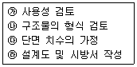
- ㉯→㉰→㉮→㉱
- ㉮→㉯→㉰→㉱
- ㉰→㉮→㉱→㉯
- ㉱→㉰→㉯→㉮
(정답률: 29%)
22. 다음의 보기에서 토목구조물의 공통적인 특징만으로 알맞게 짝지어진 것은?
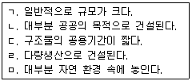
- ㄱ, ㄴ, ㅁ
- ㄱ, ㄴ, ㄹ, ㅁ
- ㄱ, ㄷ, ㄹ, ㅁ
- ㄱ, ㄴ, ㄷ, ㄹ, ㅁ
(정답률: 65%)
23. PS강재에서 필요한 설질로만 짝지어진 것은?
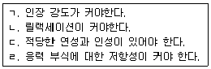
- ㄱ, ㄴ, ㄷ
- ㄱ, ㄴ, ㄹ
- ㄴ, ㄷ, ㄹ
- ㄱ, ㄷ, ㄹ
(정답률: 66%)
24. 다음 중 교량에 항상 장기적으로 작용하는 하중으로서 설계에 있어서 반드시 고려해야 할 하중은?
- 고정 하중
- 지진의 영향
- 지점 이동의 영향
- 온도 변화의 영향
(정답률: 76%)
25. 구조물이 파괴상태 또는 파괴에 가까운 상태를 기준으로 하여 설계하는 방법은?
- 강도 설계법
- 허용응력 설계법
- 도로 설계법
- 파괴 설계법
(정답률: 44%)
26. 한 개의 기둥에 전달되는 하중을 한 개의 기초가 단독으로 받도록 되어있는 확대 기초를 무슨 기초라 하는가?
- 군말뚝기초
- 벽확대기초
- 독립확대기초
- 말뚝기초
(정답률: 88%)
27. 일반적으로 자동차와 같은 활하중이 교량 위를 달릴 때 교량이 진동하게 된다. 즉, 자동차가 정지하여 있을 때보다 그 하중의 영향이 훨씬 커지는 데 이러한 하중을 무엇이라 하는가?
- 설 하중
- 고정 하중
- 충격 하중
- 풍 하중
(정답률: 66%)
28. 콘크리트 구조물에 이정한 힘을 가한 상태에서 힘은 변화하지 않는데 시간이 지나면서 점차 변형이 증가되는 성질을 무엇이라 하는가?
- 탄성
- 크랙(crack)
- 소성
- 크리프(creep)
(정답률: 70%)
29. 다음 (보기)의 특징이 설명하고 있는 교량 형식은?
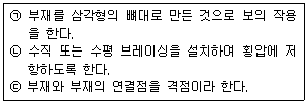
- 단순교
- 아치교
- 트러스교
- 판형교
(정답률: 83%)
30. 단면적이 10,000mm2인 원기둥이 하중 300KN의 압축을 받아 파괴가 되었다면 이 원기둥의 파괴 시 응력은?
- 15MPa
- 20MPa
- 30MPa
- 33MPa
(정답률: 56%)
31. 치수기입을 할 때 지름을 표시하는 기호로 옳은 것은?
- R
- C
- □
- ø
(정답률: 77%)
32. 그림과 같은 모양의 i형강 2개를 바르게 표시한 것은? (단, 축방향 길이=2000)
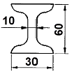
- 2-i 30×60×10×2000
- 2-i 60×30×10×2000
- i-2 10×60×30×2000
- i-2 10×30×60×2000
(정답률: 56%)
33. 그림과 같은 골조 구조에서 치수기입이 잘못된 치수는?
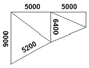
- 5000
- 5200
- 6400
- 9000
(정답률: 72%)
34. 다음 중 단면도의 절단면에 가는 실선으로 규칙적으로 나열한 선은?
- 해칭선
- 절단선
- 피치선
- 파단선
(정답률: 59%)
35. 다음 중 실선으로 표시하지 않는 것은?
- 중심선
- 파단선
- 외형선
- 해칭선
(정답률: 44%)
36. 다음 중 선의 접속 및 교차에 대한 제도방법이 틀린 것은?
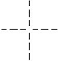
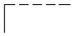
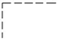
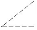
(정답률: 76%)
37. 토목 구조물 도면의 작성 순서로 가장 적당한 것은?
- 외형선 → 중심선 → 지시선 → 철근선
- 기준선 → 철근선 → 외형선 → 해칭선
- 철근선 → 외형선 → 숨은선 → 치수선
- 중심선 → 외형선 → 철근선 → 치수선
(정답률: 37%)
38. 경사가 있는 L형 옹벽 벽체에서 도면에 1 : 0.02 로 표시할 수 있는 경우는?
- 연직거리 1m일 때 수평거리 2㎜인 경사
- 연직거리 4m일 때 수평거리 8㎜인 경사
- 연직거리 1m일 때 수평거리 40㎜인 경사
- 연직거리 4m일 때 수평거리 80㎜인 경사
(정답률: 48%)
39. CAD소프트웨어의 기능 중 기본기능에 속하지 않는 것은?
- 도면 요소 편집기능
- 도면 요소 작성기능
- 기계 등의 가공 및 제조기능
- 도면 내용 출력기능
(정답률: 85%)
40. 척도에 대한 설명으로 잘못된 것은?
- 구조선도, 조립도, 배치도 등의 그림에서 치수를 읽을 필요가 없는 것도 척도는 반드시 표시하여야 한다.
- 현척은 1 : 1을 의미한다.
- 척도는 "대상물의 실제 치수"에 대한 "도면에 표시한 대상물"의 비로서 나타낸다.
- 척도의 종류로는 축척, 현척, 배척이 있다.
(정답률: 59%)
3과목: 토목일반구조
41. 치수 기입에 “R 25”라고 표시되어 있을 때 이것의 의미를 바르게 설명한 것은?
- 한편이 25㎜ 인 정사각형이다.
- 물체의 지름이 25㎜이다.
- 45° 로 모따기한 변의 길이가 25㎜이다.
- 물체의 반지름이 25㎜이다.
(정답률: 79%)
42. A1 용지에서 윤곽의 나비는 최소 몇 ㎜ 인 것이 바람직한가? (단, 철을 하지 않는 경우)
- 5㎜
- 10㎜
- 20㎜
- 25㎜
(정답률: 59%)
43. 다음 단면의 표시방법 중 모래를 표시한 것은?
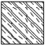
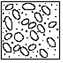
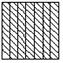
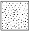
(정답률: 90%)
44. 입력 장치로만 나열된 것은?
- 마우스 - 플로터 – 키보드
- 마우스 - 스캐너 - 키보드
- CRT - 스캐너 – 프린터
- 키보드 - OMR - CRT
(정답률: 59%)
45. 건설재료의 단면표시 중 석재를 나타내는 것은?
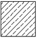
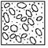
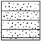
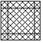
(정답률: 65%)
46. 재료단면의 경계면 표시 중 지반면 (흙)을 나타내는 것은?
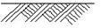
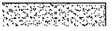
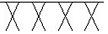
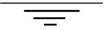
(정답률: 79%)
47. 일반적인 제도 규격용지의 폭과 길이의 비로 옳은 것은?
- 1 : 1
- 1 : √2
- 1 : √3
- 1 : 4
(정답률: 89%)
48. 다음은 어떤 투상 법에 대한 설명인가?
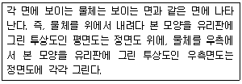
- 제1각법
- 제3각법
- 투시도법
- 제4각법
(정답률: 72%)
49. CAD란 어떤 프로그램인가?
- 컴퓨터를 이용한 설계 프로그램
- 컴퓨터를 이용한 생산 프로그램
- 컴퓨터를 이용한 소비 프로그램
- 컴퓨터를 이용한 설비 프로그램
(정답률: 82%)
50. 도면에서 윤곽선에 대한 설명으로 옳은 것은?
- 0.5㎜ 이상의 실선으로 긋는다.
- 0.1㎜ 이상의 파선으로 긋는다.
- 0.5㎜ 이상의 파선으로 긋는다.
- 0.1㎜ 이상의 실선으로 긋는다.
(정답률: 80%)
51. 치수기입에 대한 설명으로 바르지 않은 것은?
- 치수의 단위는 m를 사용하나 단위 기호는 기입하지 않는다.
- 치수 수치는 치수선에 평행하게 기입하고, 되도록 치수선의 중앙의 위쪽에 치수선으로부터 조금 띄어 기입한다.
- 경사를 표시할 때는 백분율(%) 또는 천분율( %。)로 표시할 수 있다.
- 치수는 선과 교차하는 곳에는 가급적 쓰지 않는다.
(정답률: 79%)
52. 아래 그림과 같은 철근 이음 방법은?
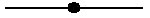
- 겹침 이음
- 용접 이음
- 기계적 이음
- 슬리브 이음
(정답률: 85%)
53. 제도용지 중 A3용지의 크기는?(단, 단위는 ㎜)
- 254 × 385
- 268 × 398
- 274 × 412
- 297 × 420
(정답률: 84%)
54. CAD의 좌표계 종류가 아닌 것은?
- 절대좌표
- 상대직교좌표
- 상대극좌표
- 상대접합좌표
(정답률: 54%)
55. 도면에 사용하는 문자에 대한 설명으로 잘못된 것은?
- 숫자는 주로 아라비아 숫자로 사용한다.
- 글자는 세로쓰기를 원칙으로 한다.
- 영자는 주로 로마자의 대문자를 사용한다.
- 한글자의 서체는 활자체에 준하는 것이 좋다.
(정답률: 71%)
56. 정토상도로 사용할 수 있는 방법은?
- 제1각법과 제2각법
- 제2각법과 제3각법
- 제3각법과 제1각법
- 제4각법과 제1각법
(정답률: 87%)
57. 도로 설계에서 자동차의 운행을 원활하게 하기 위하여 원곡선부와 직선부 사이의 곡률 반지름이 변화하는 곡선을 무엇이라 하는가?
- 완화 곡선
- 확폭량
- 반향 곡선
- 포물선
(정답률: 61%)
58. No.0의 지반고는 10m, 중심말뚝의 간격은 20m, 오르막 경사가 4%일 때 No.4＋5의 계획고는?
- 10m
- 13.4m
- 14.5m
- 20m
(정답률: 36%)
59. 도면 작도 시 유의 사항 중 틀린 것은?
- 도면에는 불필요한 사항은 기입하지 않는다.
- 정확성을 위해 도면은 될 수 있는 대로 중복표시 한다.
- 치수선의 간격이 정확해야 하며 화살 표시는 균일성 있게 표시해야 한다.
- 글씨는 명확하고 띄어쓰기에 맞게 쓰며, 도면의 크기와 배치에 알맞도록 써야 한다.
(정답률: 83%)
60. 하천 측량 제도에서 H.W.L 에 대한 의미가 바른 것은?
- 제방 높이
- 기준면
- 고수위
- 저수위
(정답률: 51%)